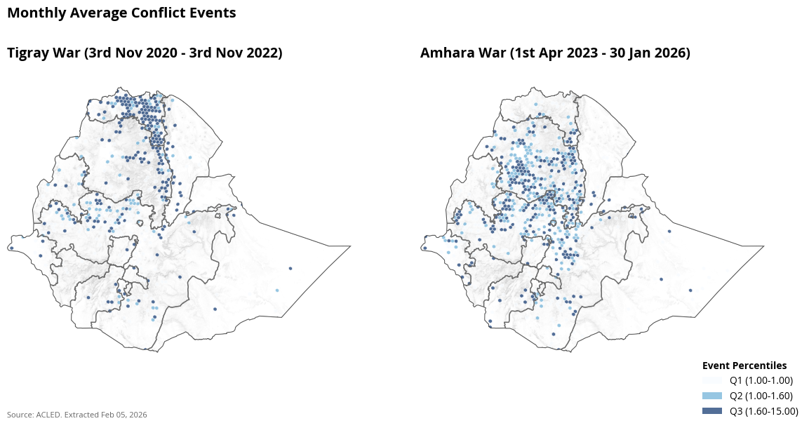
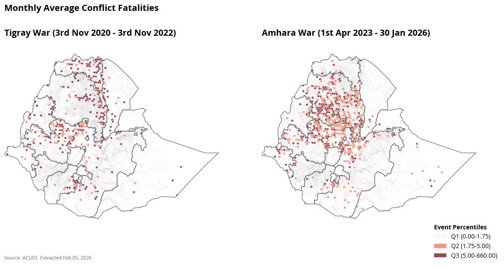
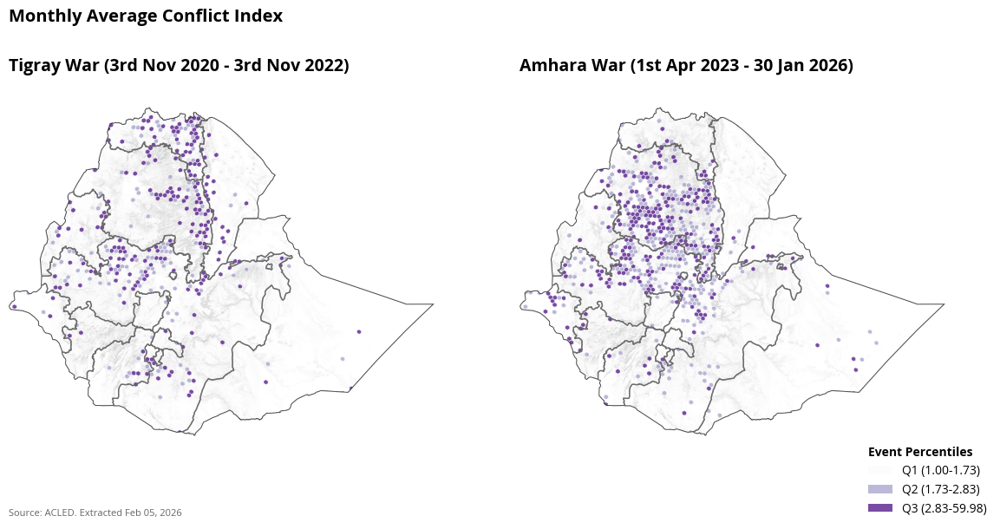

National and Subnational Conflict Trends in Ethiopia#
Using the ACLED dataset, this notebook explores the national and subnational trends, and spatial patterns in conflict events in Ethiopia. Two main periods of conflict are identified for review -
The Tigray War (Period I) between 3rd Nov 2020 - 3rd Nov 2022
The ongoing Amhara War (Period II) between 1st April 2023 and 4th February 2026
Assumptions and Considerations#
The conflict events and fatalities included in the analysis are resulting from Riots, Explosions/Remote violence, Battles and Violence against civilians, Protests and Strategic Developments. All event types were included because they resulted in deaths in different periods.
We cannot say for certain that every fatality and event during this period is directly related to the actors involved in the war. It could also involve other conflict events that may have occured during the same period.
The conflict data is extracted from ACLED, a crowdsourced, verified database of reported conflict events and fatalities. The results are extracted on February 5th 2026 and may change in the future based on new information received about estimated deaths and conflict events.
This work is still ongoing and the methodology is subject to change based n feedback, and peer review.
Definitions#
The Conflict Intensity Index is calculated using the following formula:
Conflict Intensity Index = √(Number of Events × (Number of Fatalities + 1))
Where:
Number of Events: Total count of conflict events in the given time period and location
Number of Fatalities: Total number of fatalities from conflict events (adding 1 to avoid zero multiplication)
The square root is applied to normalize the scale and reduce the impact of extreme values
This index provides a composite measure that accounts for both the frequency of conflicts (events) and their severity (fatalities), giving higher weight to areas with both frequent and deadly conflicts.
Ongoing Work#
After an initial understanding of the spatial distribution of conflict, we are exploring the potential impact of conflict on agricultural activity in Ethiopia. We’re using a differen-in-difference approach to see if proxies for crop yield measured using Enhanced Vegetation Index (EVI) have reduced in high conflict areas while controlling for the effects of rain, elevation, and land surface temperature. The analysis is being done in Tigray, Amhara, Oromia and Afar regions for the effects of the Tigray war and in the Amhara and Oromia regions to see the effects of the Amhara war.
Insights from Conflict Data#
Insights are elaborated along with visuals. Here are a few to name -
Amhara had the highest number of deaths from 2012 (15565)
The Amhara War is spread over a larger region compared to the Tigray War
2021 was the year with the highest fatalities in Ethiopia with 8537 fatalities from 1572 events
National and Subnational Conflict Trends#
There were a total of 8539 deaths from 1572 events in 2021. This was the highest in the last 10 years in Ethiopia. In 2024, there were 753 fatalities from 2570 conflict events.
Subnational Conflict Trends#
Subnationally, Amhara saw the highest number of conflict related deaths since 2012 with 15565 deaths, followed by Oromia (14407) and Tigray (5410).
Regional Fatalities by Period#
Just during the period of the Amhara War, there were 10918 deaths in Amhara and 4992 deaths in Oromia. During the Tigray War there were 4999 deaths in Tigray, 4887 deaths in oromia and 3434 deaths in Amhara.
Spatial Distribution of Conflict#
To understand spatial distribution, we breakdown the country into hexagons of approximately 235 sqkm. On average, the size of an ADM3 unit in Ethiopia is 1043 sqkm. Using these grids (H3 grids resolution 5), we plot the total number of conflict events, conflict fatlities and conflict index.
A total of 877 grids i.e., 206,095 sqkm of the area had atleast one conflict event or fatality during the Amhara War while 532 grids i.e., 125,020 sqkm had cofnlict events or fatalities during the Tigray War. This enabled us to posit that the impact of fatalities and cofnlcut events over the last two years are more widespread. Given the cofnlict is in agricultural land, we are now exploring the impacty of conflict on agriculture.


